Casas en venta en San Martín
Hay 30 anuncios de casas en la región San Martín. El precio mediano publicado es S/ 115,000, con anuncios desde S/ 3,000 hasta S/ 620,000. Los tamaños van de 35 m² a 9 ha (mediana 315 m²). 5 mencionan título o partida en su descripción (según el vendedor; no verificado).
Ver en el mapa y filtrar Cómo comprar seguro
Anuncios
 CASA EN VENTA
CASA EN VENTA
S/ 105,000 · 2 ha · Santa Clara (Moyobamba)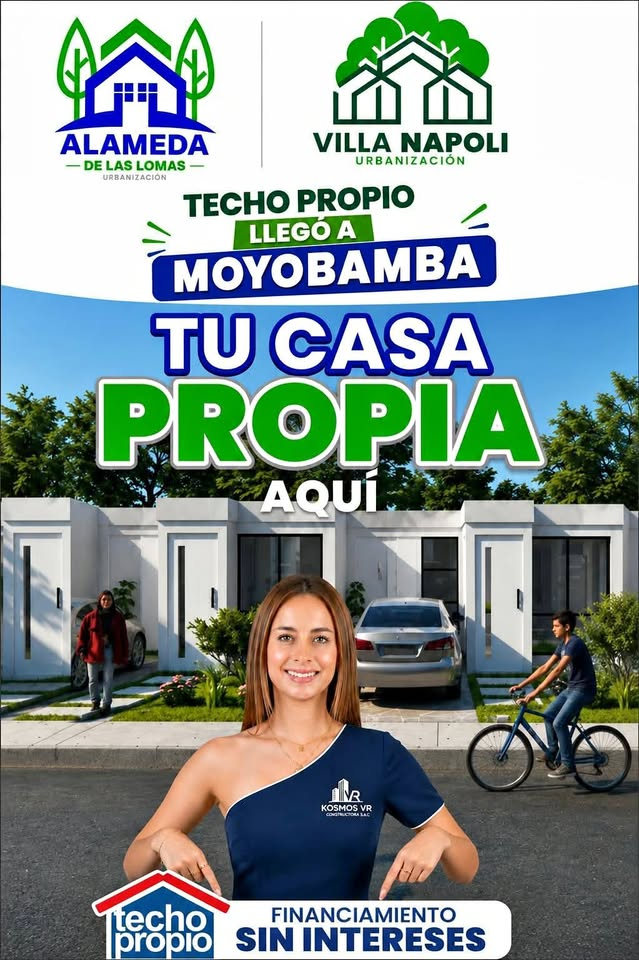
Gran oportunidad de adquirir tu casa propia en la ciudad de moyobamba o Chiclayo
S/ 5,000 · 35 m² · Moyobamba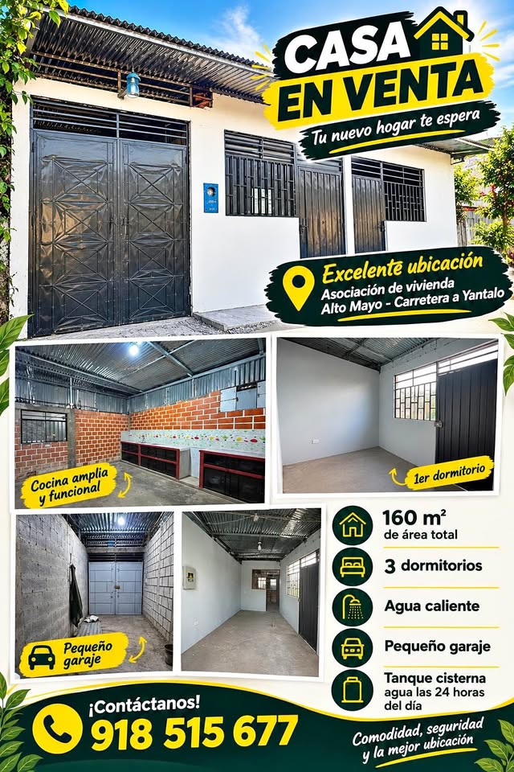
Casa en venta precio a negociar
S/ 140,000 · Yantaló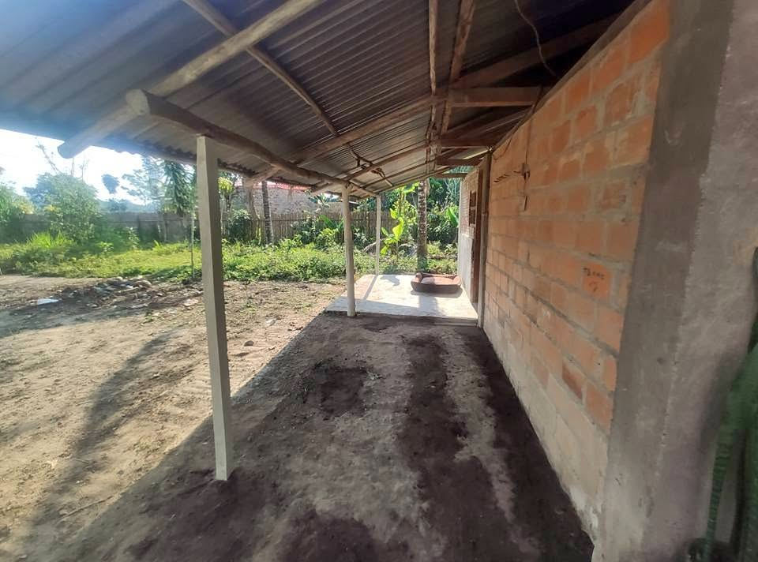
LOTE CON CASA. (En yantalo) Frente a la pista
S/ 60,000 · 315 m² · Yantaló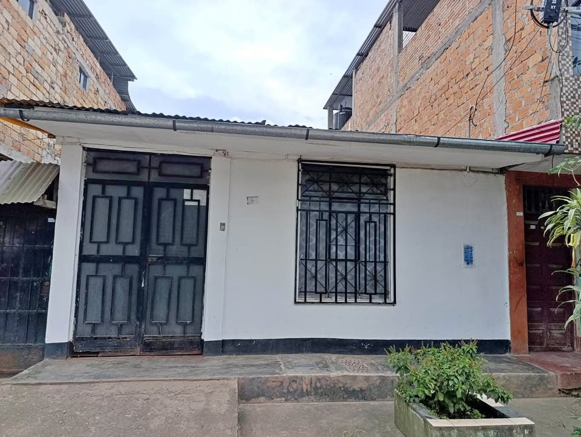
Se Vende Casa Céntrica en Moyobamba Ubicación: Jr. Pedro Canga cuadra 7
S/ 330,000 · Pedro Canga (Moyobamba)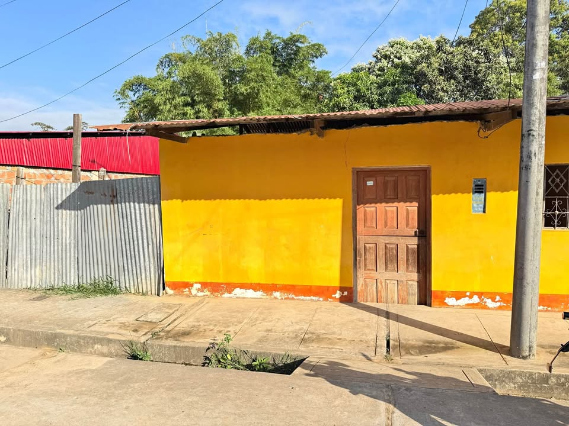
Casa terreno en venta
S/ 150,000 · Lamas Casa + terreno 330 m² en Pampa Hermosa | S/170,000
Casa + terreno 330 m² en Pampa Hermosa | S/170,000
S/ 170,000 · 330 m² · Pampa Hermosa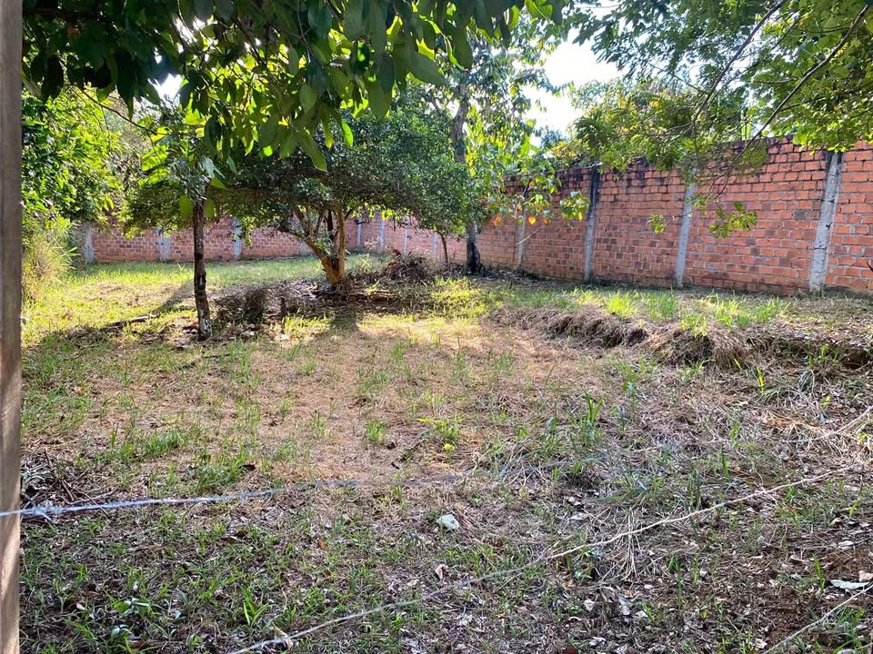
🔥 TERRENO +492 M² EN LAGUNA VENECIA | S/105,000 | BANDA DE SHILCAYO
S/ 105,000 · 492 m² · Sananguillo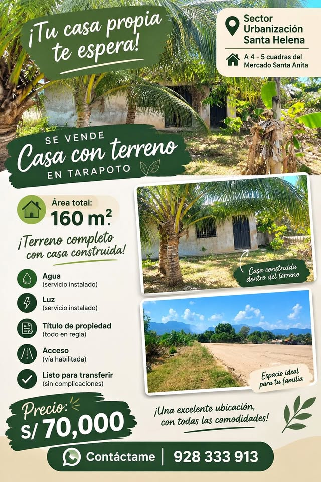
Terreno con casa en venta
S/ 70,000 · 160 m² · Tarapoto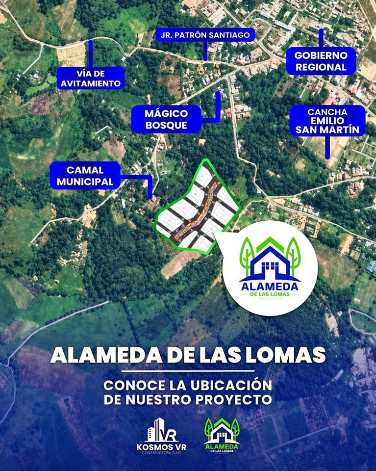
PROYECTO DE: PREVENTA DE TERRENO + CASA "BONO DE TECHO PROPIO"
S/ 3,000 · Moyobamba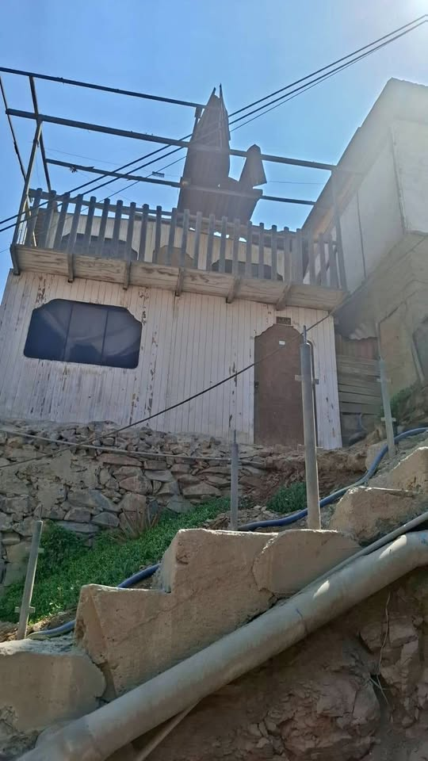
Venta de casa _ terreno
S/ 45,000 · 104 m² · Saposoa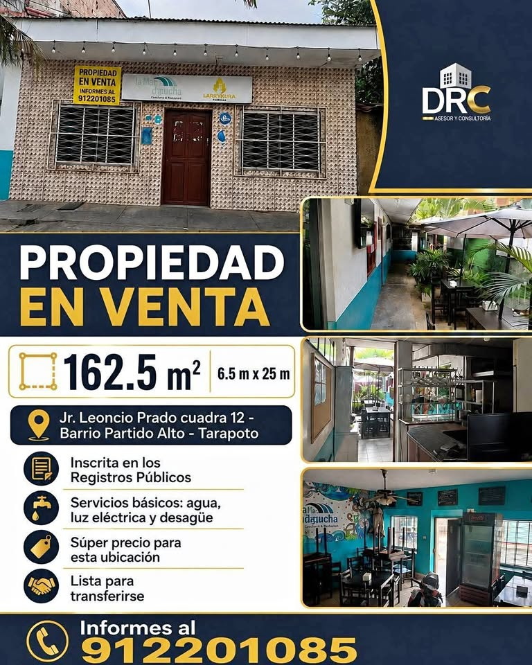
Casa como terreno
S/ 350,000 · 1,625 m² · La Banda de Shilcayo Gran oportunidad de adquirir tu terreno más casa en moyobamba
Gran oportunidad de adquirir tu terreno más casa en moyobamba
S/ 3,000 · Indañe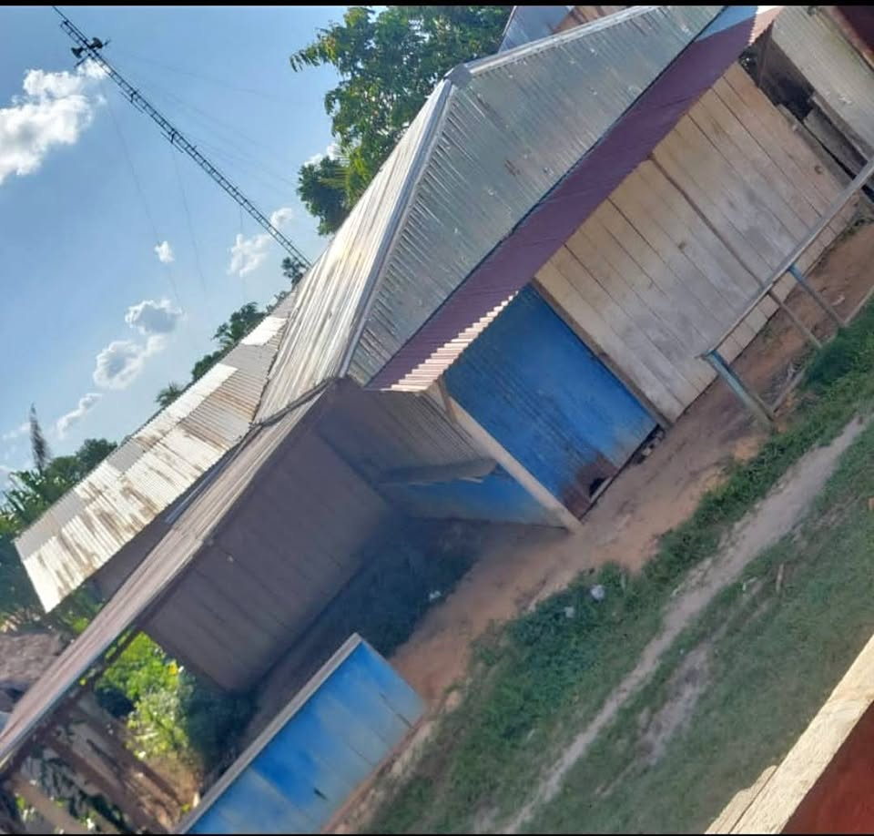
Vendo mi terreno con casa en centro poblado leche san Martín huimbayoc
S/ 20,000 · Huimbayoc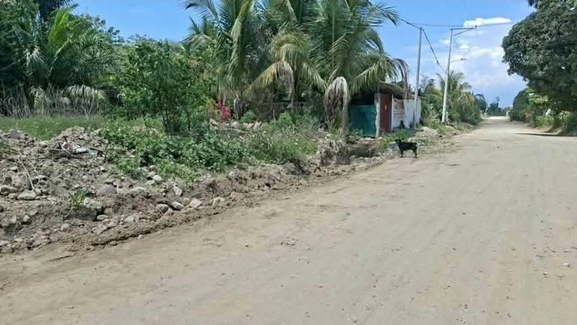
Terreno + casa rústica- frente a pista
S/ 75,000 · 700 m² · Tocache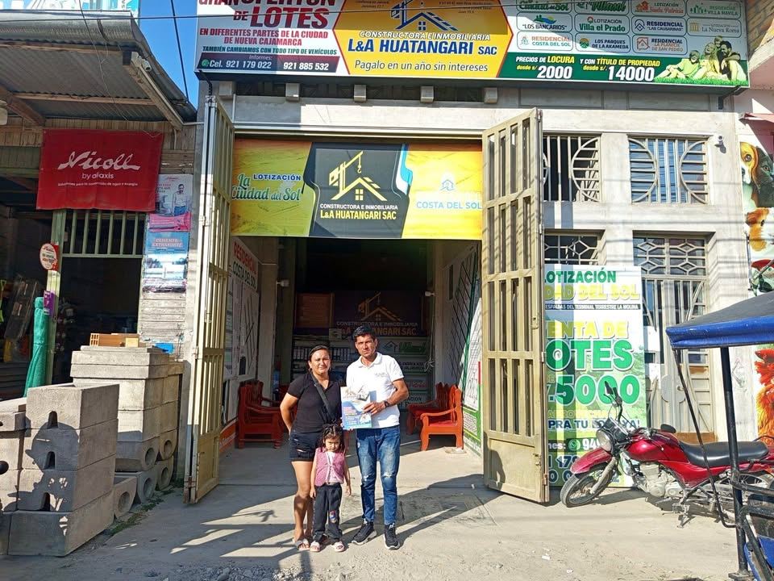
Casas,+lotes+de+terreno+en+diferentes+partes+de+la+región+san+martín+
S/ 5,000 · 120 m² · Segunda Jerusalén (Elías Soplín Vargas)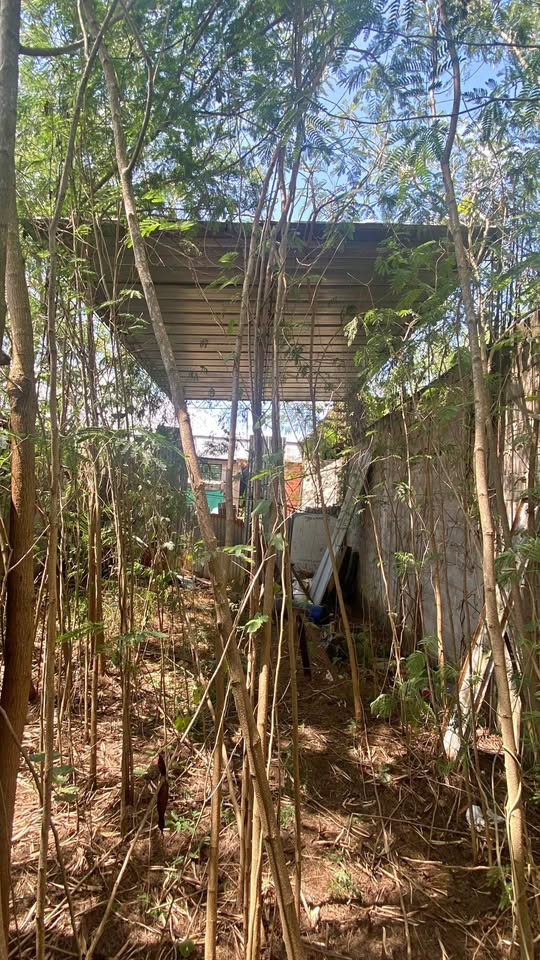
Venda de terreno Con casa Propia
S/ 28,000 · La Banda de Shilcayo- Sin fotoCasa en estreno Barrio Las Palmeras 9.50 X 25 Rioja a dos cuadras de la fernando belaunde
S/ 400,000 · 238 m² · Las Palmeras (Rioja) - Sin foto3 habitaciones 3 baños Casa
S/ 220,000 · 3 ha · Rioja - Sin fotoSE VENDE ESTA CASA DE DOS PISOS MEDIDAS 5X30 AREA CONSTRUIDA 122 METROS CUADRADOS
S/ 420,000 · 122 m² · Moyobamba - Sin fotoCasa en venta 2 pisos Cuenta con todos los servicios operativos 6m x 19m Miraflores 121 sa
S/ 200,000 · 114 m² · Chazuta - Sin fotoCASA Venta en Jr. Lucas Gonzáles Vela Lt. 14. Mz 125 LAMAS, SAN MARTÍN 5Dormito 3Baños $98
S/ 98,000 · 198 m² · Lamas - Sin foto𝑽𝑬𝑵𝑫𝑶 𝑪𝑨𝑺𝑨 𝑬𝑺𝑻𝑹𝑬𝑵𝑶 EN TARAPOTO (03 habitaciones y cochera 02 carros)
S/ 420,000 · 3 ha · Tarapoto - Sin foto𝑽𝑬𝑵𝑫𝑶 𝑪𝑨𝑺𝑨 𝑬𝑵 𝑳𝑨𝑺 𝑷𝑨𝑳𝑴𝑨𝑺 (04 Habitaciones y con Piscina)
S/ 600,000 · 4 ha · Las Palmas - Sin foto🏠 𝐕𝐄𝐍𝐃𝐎 Casa, 03 habitaciones, y cochera para 02 carros (Zona tranquila, cerca de co
S/ 420,000 · 3 ha · Tarapoto - Sin fotoVENDO HERMOSA CASA de 6.70 x 15 en la urbanización planicie baja TARAPOTO
S/ 120,000 · 101 m² · Tarapoto - Sin foto2 Hectáreas más casa. En Zapote Moyobamba.
S/ 125,000 · 2 ha · Moyobamba - Sin fotoMOYOBAMBA PERU, 9 HECTÁREAS EN VENTA, CON 2 HECTÁREAS DE CAFE, CASA, AGUA, CARRETERA, [dat
S/ 110,000 · 9 ha · Moyobamba - Sin foto🏡 TERRENO + CASA – 510 M² – SEGUNDA JERUSALÉN
S/ 620,000 · 510 m² · Segunda Jerusalén (Elías Soplín Vargas) - Sin fotoSe vende casa terreno en Lamas
S/ 80,000 · 252 m² · La Banda de Shilcayo
Búsquedas relacionadas
Preguntas frecuentes
¿Cómo verifico en SUNARP un casa en San Martín?
Pide al vendedor el número de partida registral y consúltalo gratis en Conoce Aquí de SUNARP. Luego solicita la copia literal o el certificado registral para ver quién es el dueño y si hay cargas o gravámenes. Más pasos en nuestra guía Compra segura.
¿Los datos de los anuncios están verificados?
No. Precio, tamaño, ubicación y situación legal los escribe cada vendedor. CompraTerrenos.pe no los verifica: confirma todo antes de pagar.
¿Qué diferencia hay entre posesión y propiedad?
Una constancia o certificado de posesión no es un título de propiedad inscrito. Para ser propietario frente a terceros, el título debe estar inscrito en Registros Públicos. Ver Compra segura.
¿Puedo comprar desde el extranjero?
Sí, en general mediante un poder por escritura pública otorgado en el consulado. Revisa Comprar desde el extranjero (información general, no es asesoría legal).
Datos de anuncios públicos actualizados el 9 de octubre de 2026. La información la publica cada vendedor; CompraTerrenos.pe no la verifica.